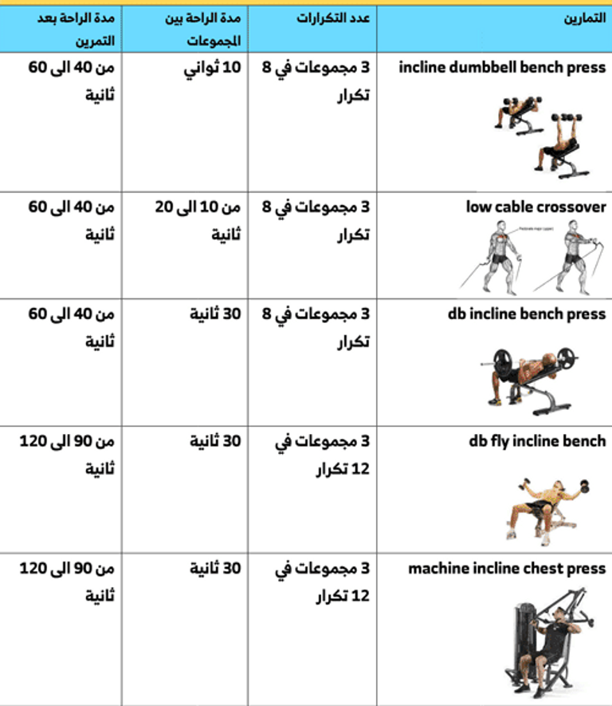
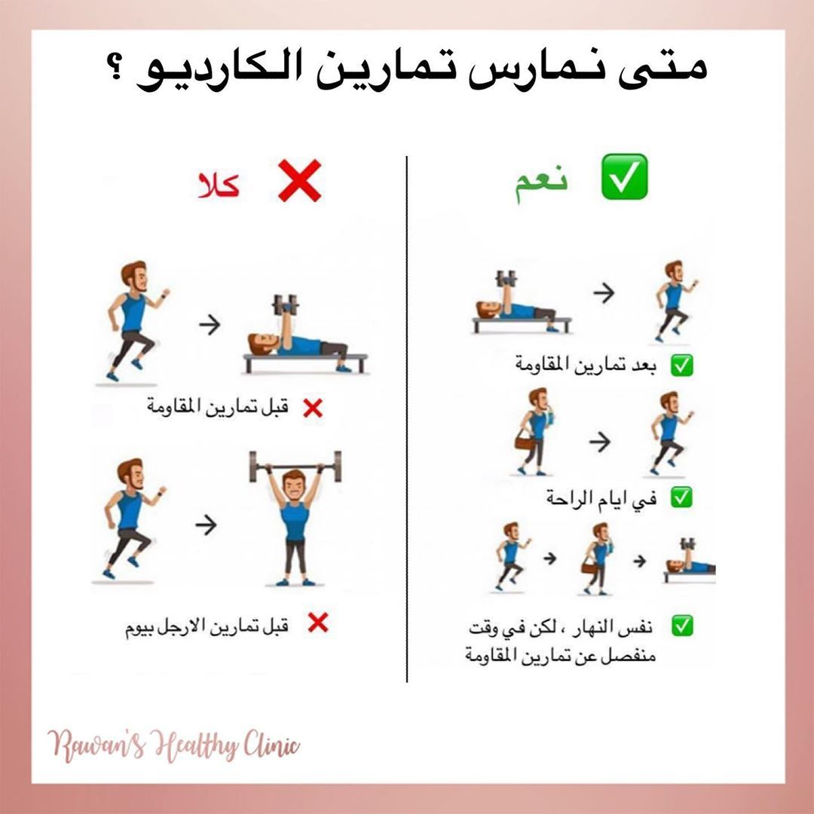
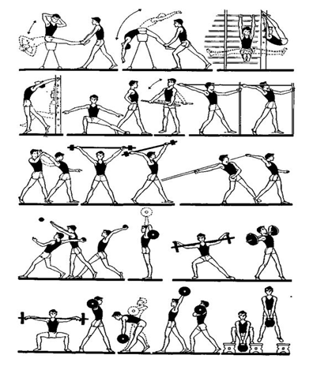

تركز تمارين القوة على بناء الكتلة العضلية وزيادة قدرة الجسم على التحمل. تشمل هذه التمارين رفع الأثقال، تمارين المقاومة، واستخدام الأوزان الحرة. تساعد على تحسين الكثافة العضلية، تقوية المفاصل، وزيادة معدل الأيض.

تهدف تمارين الكارديو إلى تحسين صحة القلب والأوعية الدموية، حرق الدهون، وزيادة اللياقة العامة. تشمل الجري، القفز، ركوب الدراجة، والرقص الرياضي. يُنصح بها لزيادة الطاقة وتعزيز صحة الجهاز التنفسي.

تساعد تمارين المرونة على تحسين حركة المفاصل، تقليل التصلب العضلي، والوقاية من الإصابات. تتضمن تمارين التمدد، اليوغا، والتمارين الديناميكية. تلعب دورًا مهمًا في تحقيق توازن بدني وشعور عام بالراحة.